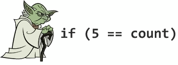

We started writing this book on November 2013. The initial goal was to provide guidelines to write the most clean Objective-C code possible: there are too many guidelines out there and all of them are debatable. We didn't aim introducing hard rules but, instead, a way for writing code to be more uniform as possible across different developers. With time the scope moved to explain how to design and architecture good code.
The idea underneath is that the code should not only compile, instead it should "validate". Good code has several characteristics: should be concise, self-explanatory, well organized, well documented, well named, well designed and stand the test of time. The main goals behind the curtain are that clarity always wins over performance and a rationale for a choice should always be provided. Some topics discussed here are general and independent from the language even if everything is tied up to Objective-C.
On June 6th, 2014 Apple announced the new programming language to be used for iOS and Mac development in future: Swift. This new language is a radical departure from Objective-C and, of course, has caused a change in our plan for writing this book. It boiled down to the decision of releasing the current status of this essay without continuing our journey in unfolding the topics we originally planned to include. Objective-C is not going anywhere but at the same time continuing to write a book on a language that will not receive the same attention as it used to, is not a wise move.
We have released this book for free and for the community because we hope to provide value to the reader, if each one of you can learn at least one best practice we have reached our goal.
We have done our best to polish this text and make it pleasant to the reader but we may have made typos, mistakes or left any part incomplete. We strongly encourage you to give us feedback and suggest improvements, so please get in touch with us if have any. We particularly appreciate pull requests.
Luca Bernardi
Alberto De Bortoli
Conditional bodies should always use braces even when a conditional body could be written without braces (e.g., it is one line only) to prevent errors. These errors include adding a second line and expecting it to be part of the if-statement. Another, even more dangerous defect, may happen where the line "inside" the if-statement is commented out, and the next line unwittingly becomes part of the if-statement.
Preferred:
if (!error) {
return success;
}
Not preferred:
if (!error)
return success;
or
if (!error) return success;
In February 2014 the well-know goto fail was found in the Apple's SSL/TLS implementation.
The bug was due to a repeated goto statement after an if condition, wrapping the if branch in parentheses would have prevented the issue.
The code extract:
static OSStatus
SSLVerifySignedServerKeyExchange(SSLContext *ctx, bool isRsa, SSLBuffer signedParams,
uint8_t *signature, UInt16 signatureLen)
{
OSStatus err;
...
if ((err = SSLHashSHA1.update(&hashCtx, &serverRandom)) != 0)
goto fail;
if ((err = SSLHashSHA1.update(&hashCtx, &signedParams)) != 0)
goto fail;
goto fail;
if ((err = SSLHashSHA1.final(&hashCtx, &hashOut)) != 0)
goto fail;
...
fail:
SSLFreeBuffer(&signedHashes);
SSLFreeBuffer(&hashCtx);
return err;
}
Easy to spot, there are 2 goto fail; lines one after the other without parentheses. We definitely don't want to risk creating bugs like the one above right?
In addition, this style is more consistent with all other conditionals, and therefore more easily scannable.
Always avoid Yoda conditions. A Yoda condition is when comparing a constant to a variable instead of the other way around. It's like saying "if blue is the sky" or "if tall is the man" instead of "if the sky is blue" or "if the man is tall".

Preferred:
if ([myValue isEqual:@42]) { ...
Not preferred:
if ([@42 isEqual:myValue]) { ...
On a similar note of the Yoda conditions, also the nil check has been at the centre of debates. Some notous libraries out there use to check for an object to be or not to be nil as so:
if (nil == myValue) { ...
One could argue that this is amiss or similar to a Yoda condition as nil is kind of a constant. The reason why sometimes programmers use this approach to prevent error that are difficult to debug. Consider the following code:
if (myValue == nil) { ...
If a typo occurs and the programmer actually types:
if (myValue = nil) { ...
it would be a valid assignment, indeed hard to debug if you are an experienced programmer (and therefore probably with some kind of visual impairment). That could never occur putting nil as argument on the left as it is nor assignable. There is also to be said that if the programmer uses this approach, he or she is perfectly aware of the underlying motivation and therefore the whole thing decades as it would be better to just double check what just typed.
More on this, to avoid all this fuss the approach that leave no space to doubt is to use the exclamation mark. Since nil resolves to NO it is unnecessary to compare it in conditions. Also, never compare something directly to YES, because YES is defined to 1 and a BOOL can be up to 8 bits as it is a char underneath.
Preferred:
if (someObject) { ...
if (![someObject boolValue]) { ...
if (!someObject) { ...
Not Preferred:
if (someObject == YES) { ... // Wrong
if (myRawValue == YES) { ... // Never do this.
if ([someObject boolValue] == NO) { ...
This allows also for more consistency across files and greater visual clarity.
When coding with conditionals, the left hand margin of the code should be the "golden" or "happy" path. That is, don't nest if statements. Multiple return statements are OK. This will avoid the growth of cyclomatic complexity and make the code easier to read because the important part of your method is not nested inside a branch but you have a visual clue of what is the most relevant code.
Preferred:
- (void)someMethod {
if (![someOther boolValue]) {
return;
}
//Do something important
}
Not preferred:
- (void)someMethod {
if ([someOther boolValue]) {
//Do something important
}
}
When you have complex condition in the if clause you should always extract them and assign to a BOOL variable to make more clear the logic and the meaning of every single conditions.
BOOL nameContainsSwift = [sessionName containsString:@"Swift"];
BOOL isCurrentYear = [sessionDateCompontents year] == 2014;
BOOL isSwiftSession = nameContainsSwift && isCurrentYear;
if (isSwiftSession) {
// Do something very cool
}
The Ternary operator, ? , should only be used when it increases clarity or code neatness. A single condition is usually all that should be evaluated. Evaluating multiple conditions is usually more understandable as an if statement, or refactored into instance variables.
Preferred:
result = a > b ? x : y;
Not preferred:
result = a > b ? x = c > d ? c : d : y;
When the second argument of the ternary operator (the if branch) returns the same object that was checked for existence in the condition, the following syntax is neat:
Preferred:
result = object ? : [self createObject];
Not preferred:
result = object ? object : [self createObject];
When methods return an error parameter by reference, check the returned value, not the error variable.
Preferred:
NSError *error = nil;
if (![self trySomethingWithError:&error]) {
// Handle Error
}
Moreover, some of Apple's APIs write garbage values to the error parameter (if non-NULL) in successful cases, so checking the error can cause false negatives (and subsequently crash).
Braces are not required for case statements, unless enforced by the complier.
When a case contains more than one line, braces should be added.
switch (condition) {
case 1:
// ...
break;
case 2: {
// ...
// Multi-line example using braces
break;
}
case 3:
// ...
break;
default:
// ...
break;
}
There are times when the same code can be used for multiple cases, and a fall-through should be used. A fall-through is the removal of the 'break' statement for a case thus allowing the flow of execution to pass to the next case value.
switch (condition) {
case 1:
case 2:
// code executed for values 1 and 2
break;
default:
// ...
break;
}
When using an enumerated type for a switch, default is not needed. For example:
switch (menuType) {
case ZOCEnumNone:
// ...
break;
case ZOCEnumValue1:
// ...
break;
case ZOCEnumValue2:
// ...
break;
}
Moreover, avoiding the default case, if new values are added to the enum, the programmer is immediately notified with a warning:
Enumeration value 'ZOCEnumValue3' not handled in switch.
When using enums, it is recommended to use the new fixed underlying type specification because it has stronger type checking and code completion. The SDK now includes a macro to facilitate and encourage use of fixed underlying types — NS_ENUM()
Example:
typedef NS_ENUM(NSUInteger, ZOCMachineState) {
ZOCMachineStateNone,
ZOCMachineStateIdle,
ZOCMachineStateRunning,
ZOCMachineStatePaused
};
Apple naming conventions should be adhered to wherever possible, especially those related to memory management rules (NARC).
Long, descriptive method and variable names are good.
Preferred:
UIButton *settingsButton;
Not Preferred:
UIButton *setBut;
Constants should be camel-case with all words capitalized and prefixed by the related class name for clarity.
Preferred:
static const NSTimeInterval ZOCSignInViewControllerFadeOutAnimationDuration = 0.4;
Not Preferred:
static const NSTimeInterval fadeOutTime = 0.4;
Constants are preferred over in-line string literals or numbers, as they allow for easy reproduction of commonly used variables and can be quickly changed without the need for find and replace. Constants should be declared as static constants and not #defines unless explicitly being used as a macro.
Preferred:
static NSString * const ZOCCacheControllerDidClearCacheNotification = @"ZOCCacheControllerDidClearCacheNotification";
static const CGFloat ZOCImageThumbnailHeight = 50.0f;
Not Preferred:
#define CompanyName @"Apple Inc."
#define magicNumber 42
Constants exposed externally should use this pattern in the interface file:
extern NSString *const ZOCCacheControllerDidClearCacheNotification;
and the previously defined assignment should be in the implementation file.
You only need to add the namespace to a constant that is made public. Even though constants used within an implementation could follow a different pattern, there is no need not to be consistent with the rule.
In method signatures, there should be a space after the method type (-/+ symbol). There should be a space between the method segments (matching Apple's style). Always include a keyword and be descriptive with the word before the argument which describes the argument.
The usage of the word "and" is reserved. It should not be used for multiple parameters as illustrated in the initWithWidth:height: example below.
Preferred:
- (void)setExampleText:(NSString *)text image:(UIImage *)image;
- (void)sendAction:(SEL)aSelector to:(id)anObject forAllCells:(BOOL)flag;
- (id)viewWithTag:(NSInteger)tag;
- (instancetype)initWithWidth:(CGFloat)width height:(CGFloat)height;
Not Preferred:
- (void)setT:(NSString *)text i:(UIImage *)image;
- (void)sendAction:(SEL)aSelector :(id)anObject :(BOOL)flag;
- (id)taggedView:(NSInteger)tag;
- (instancetype)initWithWidth:(CGFloat)width andHeight:(CGFloat)height;
- (instancetype)initWith:(int)width and:(int)height; // Never do this.
NSString, NSDictionary, NSArray, and NSNumber literals should be used whenever creating immutable instances of those objects. Pay special care that nil values not be passed into NSArray and NSDictionary literals, as this will cause a crash.
For example:
NSArray *names = @[@"Brian", @"Matt", @"Chris", @"Alex", @"Steve", @"Paul"];
NSDictionary *productManagers = @{@"iPhone" : @"Kate", @"iPad" : @"Kamal", @"Mobile Web" : @"Bill"};
NSNumber *shouldUseLiterals = @YES;
NSNumber *buildingZIPCode = @10018;
Not:
NSArray *names = [NSArray arrayWithObjects:@"Brian", @"Matt", @"Chris", @"Alex", @"Steve", @"Paul", nil];
NSDictionary *productManagers = [NSDictionary dictionaryWithObjectsAndKeys: @"Kate", @"iPhone", @"Kamal", @"iPad", @"Bill", @"Mobile Web", nil];
NSNumber *shouldUseLiterals = [NSNumber numberWithBool:YES];
NSNumber *buildingZIPCode = [NSNumber numberWithInteger:10018];
For the mutable counterparts of these classes we recommend, instead, the use of the explicit classes such as NSMutableArray, NSMutableString, and so on.
The following should be avoided:
NSMutableArray *aMutableArray = [@[] mutableCopy];
The problems with the previous notation are both of efficiency and readability.
On the efficiency side, an unnecessarily immutable object is created and immediately thrown away; this unlikely will slow down your app (unless the method here is called frequently) but there is really no reason to do this just to save some characters.
Regarding the readability, we can see two problems here: the first is that when scanning through the code and seeing @[] your mind is immediately connected to and instance of NSArray, but in this case you need to stop and check more thoughtfully. Another aspect to take into account is that it would be very likely that someone with less experience will see your code and depending on his background he might not be very comfortable with the dichotomy between mutable and immutable objects. He or she could not be very familiar with the meaning of creating a mutable copy (obviously we are not suggesting that this knowledge is not necessary). Again, this is not something absolutely wrong but is more about code usability (that includes readability).
You should always prefix your class with three capital-case letters (two letters are reserved for Apple classes), this looking-weird practice is done to mitigate the notable absence of namespaces in our favorite language.
Some developers don't follow this practice for model objects (we observed this practice especially for Core Data objects), we advice to strictly follow this convention also in the case of Core Data objects because you might end up merging your Managed Object Model with other MOMs, maybe coming from third party library.
As you may already have noticed, in this book the class (but not only) prefix is ZOC.
There is another good practice that you might want to follow while choosing the name for your classes: when you're creating a subclass, you should put the specifying name part between the class prefix and the superclass name. This is better explained with an example: if you have a class named ZOCNetworkClient, example of subclass name will be ZOCTwitterNetworkClient (note "Twitter" between "ZOC" and "NetworkClient"); or, following the same rule, a UIViewController subclass would ZOCTimelineViewController.
The recommended way to organize the code is to have dealloc method placed at the top of the implementation (directly after the @synthesize and @dynamic statements) and the init should be placed directly below the dealloc methods of any class. In case of multiple initializer the designated initializer should be placed as first method, because is the one where most likely there is more logic, and the secondary initializers should follow.
In these days with ARC, it is less likely that you will need to implement the dealloc method, but still the rationale is that by having the dealloc very close to your init methods, you are visually emphasizing the pairing between the methods. Usually in the dealloc method you will undo things that you have done in the init methods.
init methods should be structured like this:
- (instancetype)init
{
self = [super init]; // call the designated initializer
if (self) {
// Custom initialization
}
return self;
}
It's interesting to understand why do we need to set the value of self with the return value of [super init] and what happens if we don't do that.
Let's do a step back: we are so used to type expressions like [[NSObject alloc] init] that the difference between alloc and init fades away. A peculiarity of Objective-C is the so called two stage creation. This means that the allocation and the initialization are two separate steps, and therefore two different methods need to be called: alloc and init.
alloc is responsible for the object allocation. This process involve the allocation of enough memory to hold the object from the application virtual memory, writing the isa pointer, initializes the retain count, and zeroing all the instance variables. init is responsible for initializing the object, that means brings the object in an usable state. This typically means set the instance variable of an object to reasonable and useful initial values.The alloc method will return a valid instance of an uninitialized object. Every message sent to this instance will be translated into an objc_msgSend() call where the parameter named self will be the pointer returned by alloc; in this way self is implicitly available in the scope of every methods.
To conclude the two step creation the first method sent to a newly allocated instance should, by convention, be an init method. Notably the init implementation of NSObject is not doing more than simply return self.
There is another important part of the contract with init: the method can (and should) signal to the caller that it wasn't able to successfully finish the initialization by returning nil; the initialization can fail for various reasons such as an input passed in the wrong format or the failure in successfully initialize a needed object.
This is lead us to understand why you should always call self = [super init], if your superclass is stating that it wasn't able to successfully initialize itself, you must assume that you are in an inconsistent state and therefore do not proceed with your own initialization and return nil as well in your implementation. If you fail to do so you might end up dealing with an object that is not usable, that will not behave as expected and that might eventually lead to crash your app.
The ability to re-assign self can also be exploited by the init methods to return a different instance than the one they have been called on. Examples of this behavior are Class cluster or some Cocoa classes that returns the same instance for identical (immutable) objects.
Objective-C have the concept of designated and secondary initializers. The designated initializer is the initializer that takes the full complement of initialization parameters, the secondary initializers are one or more initializer methods that calls the designated initializer providing one or more default values for the initialization parameter.
@implementation ZOCEvent
- (instancetype)initWithTitle:(NSString *)title
date:(NSDate *)date
location:(CLLocation *)location
{
self = [super init];
if (self) {
_title = title;
_date = date;
_location = location;
}
return self;
}
- (instancetype)initWithTitle:(NSString *)title
date:(NSDate *)date
{
return [self initWithTitle:title date:date location:nil];
}
- (instancetype)initWithTitle:(NSString *)title
{
return [self initWithTitle:title date:[NSDate date] location:nil];
}
@end
Given the above example initWithTitle:date:location: is the designated initializer. The other two init methods are the secondary initializers because they are just calling the designated initializer of the class where they are implemented.
A class should always have one and only one designated initializer, all other init methods should call the designated one (even though there are an exception to this case).
This dichotomy does not dictate any requirement about which initializer should be called.
It should rather be valid to call any designated initializer in the class hierarchy, and it should be guaranteed that all the designated initializer in the class hierarchy are called starting from the furthest ancestor (typically NSObject) down to your class.
Practically speaking this means that the first initialization code executed is the furthest ancestor, and then going down to the class hierarchy; giving to all the classes in the hierarchy the chance to do their specific part of initialization. This totally make sense: you want that everything you inherit from your superclass is in an usable state before doing your actual work.
Even though it isn't explicitly stated, all the classes in Apple's frameworks are guaranteed to respect this contract and your classes should do the same to be sure to be a good citizen and behave correctly and as expected.
There are three different situations that may present when defining a new class:
The first case is the most trivial: you don't need to add any specific logic at the initialization of your class you simply rely on you parent designated initializer.
When you want to provide additional initialization logic you can decide to override the designated initializer. You should only override your immediate superclass's designated initializer and be sure that your implementation calls the super of the method you're overriding.
A typical example is whether you create a UIViewController subclass overriding initWithNibName:bundle::
@implementation ZOCViewController
- (id)initWithNibName:(NSString *)nibNameOrNil bundle:(NSBundle *)nibBundleOrNil
{
// call to the superclass designated initializer
self = [super initWithNibName:nibNameOrNil bundle:nibBundleOrNil];
if (self) {
// Custom initialization
}
return self;
}
@end
In case of UIViewController subclass it would be an error to override init as, in the case that the caller will try to initialize your class by calling initWithNib:bundle, your implementation will not be called. This also contradicts the rule that states that it should be valid to call any designated initializer.
In case you want to provide your own designated initializer there are three steps that you need to follow in order to guarantee the correct behavior:
Lots of developers often miss the last two steps, this is not only a sign of little care, but in the case of the step two is clearly against the contract with the framework and can lead to very non-deterministic behaviors and bugs. Let's see an example of the correct way to implement this:
@implementation ZOCNewsViewController
- (id)initWithNews:(ZOCNews *)news
{
// call to the immediate superclass's designated initializer
self = [super initWithNibName:nil bundle:nil];
if (self) {
_news = news;
}
return self;
}
// Override the immediate superclass's designated initializer
- (id)initWithNibName:(NSString *)nibNameOrNil bundle:(NSBundle *)nibBundleOrNil
{
// call the new designated initializer
return [self initWithNews:nil];
}
@end
In case you don't override initWithNibName:bundle: and the caller decides to initialize you class with this method (that would be a perfectly valid option) the method initWithNews: will never get called and this will bring to an incorrect initialization sequence where the specific initialization logic of your class is not executed.
Even though it should be possible to infer what method is the designate initializer, it is always good to be clear and explicit (the future you or other developers that will work on your code will thank you). There are two strategies (non mutually exclusive) that you can decide to use: the first one you is to clearly state in the documentation which initializer is the designated one, but better yet you can be nice with your compiler and by using the compiler directive __attribute__((objc_designated_initializer)) you can signal your intent.
Using that directive will also helps the compiler helping you and in fact the compiler will issue a warning if in your new designate initializer you don't call your superclass's designated initializer.
There are, though, cases in which not calling the class designated initializer (and in turn providing the required parameters) and calling another designated initializer in the class hierarchy will bring the class in an useless state. Referring to the previous example, there is no point in instantiating a ZOCNewsViewController that should present a news, without the news itself. In this case you can enforce even more the need to call a very specific designated initializer by simply making all the other designated initializers not available. It is possible to do that by using another compiler directive __attribute__((unavailable("Invoke the designated initializer"))), decorating a method with this attribute will make the compiler issuing an error if you try to call this method.
Here the header relative to the implementation of the previous example (note the use of macros to don't repeat the code and being less verbose).
@interface ZOCNewsViewController : UIViewController
- (instancetype)initWithNews:(ZOCNews *)news ZOC_DESIGNATED_INITIALIZER;
- (instancetype)initWithNibName:(NSString *)nibNameOrNil bundle:(NSBundle *)nibBundleOrNil ZOC_UNAVAILABLE_INSTEAD(initWithNews:);
- (instancetype)init ZOC_UNAVAILABLE_INSTEAD(initWithNews:);
@end
A corollary of what described above is that you should never call a secondary initializer from within the designated one (if the secondary initializer respects the contract, it will call the designated one). Doing so, the call is very likely to invoke one of the subclass's overridden init methods and it will result in infinite recursion.
There is however an exception to all the rules laid out before that is whether an object conforms to the NSCoding protocol and it is initialized through the method initWithCoder:.
We should distinguish between the case where the superclass is adopting NSCoding and when not.
In the former case, if you just call [super initWithCoder:] you will probably have some shared initialization code with the designated initializer. A good way to handle this is to extract this code in a private method (i.e. p_commonInit).
When your superclass does not adopt NSCoding the recommendation is to threat initWithCoder: as a secondary initializer and therefore call the self designated initializer. Note that this is against what suggested by Apple in the Archives and Serializations Programming Guide where is stated:
the object should first invoke its superclass's designated initializer to initialize inherited state
following this will actually lead to a non-deterministic behavior that will change if your class is or not a direct subclass of NSObject.
As stated in the previous paragraph, a secondary initializer is a sort of convenience method to provide default values / behaviors to the designated initializer.
That said, it seems clear that you should not do any mandatory initialization in such method and you should never assume that this method will gets called. Again, the only methods that we are guaranteed to get called are the designated initializer.
This imply that in your designated initializer you should always call another secondary initializer or your self designated initializer. Sometimes, by mistake, one can type super; doing this will cause not to respect the aforementioned sequence of initialization (in this specific case by skipping the initialization of the current class).
One often doesn't realize that Cocoa is full of conventions, and they can help the compiler being a little bit more smart. Whether the compiler encounters alloc or init methods, it will know that, even though the return type of both method is id, those methods will always return objects that are an instance of the receiving class's type. As a consequence, this allows the compiler to provide and enforce the type checking (i.e. check that the methods called on the returned instance are valid). This kind of Clang smartness is due to what is called related result type, meaning that
messages sent to one of alloc and init methods will have the same static type as the instance of the receiver class
To have more information about the convention that allow to automatically identify the related result type please refer to the appropriate section) in the Clang Language Extensions guide.
A related result type can be explicitly stated using the instancetype keyword as return type and this can be very helpful in situation where a factory method or convenience constructor is used. This will hint the compiler with the correct type checking and, probably more important, will behave correctly also when subclassing.
@interface ZOCPerson
+ (instancetype)personWithName:(NSString *)name;
@end
Even though, according to the clang specification, id can be promoted to instancetype by the compiler. In the case of alloc or init we strongly encourage to use the return type instancetype for all class and instance methods that returns an instance of the class.
This is mostly to form the habit and to be consistent (and possibly having a more readable interface) in all your APIs. Once again, by making small adjustments to your code you can improve the readability: with a simple glance you will be able to distinguish which methods are returning an instance of your class. Sort of details you will appreciate in the long run.
Class cluster as described in the Apple's documentation is
an architecture that groups a number of private, concrete subclasses under a public, abstract superclass.
If this description sounds familiar probably your instinct is correct. Class cluster is the Apple lingo for the Abstract Factory design pattern.
The idea with class cluster is very simple: you typically have an abstract class that during the initialization process uses information, generally provided as parameters of the initializer method or available in the environment, to apply a logic and instantiate a concrete subclass. This "public facing" class should internally have a good knowledge of its subclass to be able to return the private subclass that best suited the task.
This pattern is very useful because it removes the complexity of this initialization logic from the caller that only knows about the interface to comunicate with the object, without actually caring about the underlying implementation.
Class clusters are widely used in the Apple's frameworks; some of the most notably examples are NSNumber that can return an appropriate subclass depending of the type of number provided (Integer, Float, etc...) or NSArray that will return a concrete subclass with the best storage policy.
The beauty of this pattern is that the caller can be completely unaware of the concrete subclass; in fact it can be used when designing a library to be able to swap the underlaying returned class without leaking any implementation detail as long as is respectful of the contract established in the abstract class.
In our experience the use of a Class Cluster can be very helpful in removing a lot of conditional code. A typical example of this is when you have the same UIViewController subclass for both iPhone and iPad, but the behavior is slightly different depending on the the device. The naïve implementation is to put some conditional code checking the device in the methods where the different logic is needed, even though initially the place where this conditional logic is applied may be quite few they naturally tend to grow producing an explosion of code paths. A better design can be achieved by creating an abstract and generic view controller that will contain all the shared logic and then two specializing subclass for every device. The generic view controller will check the current device idiom and depending on that it will return the appropriate subclass.
@implementation ZOCKintsugiPhotoViewController
- (id)initWithPhotos:(NSArray *)photos
{
if ([self isMemberOfClass:ZOCKintsugiPhotoViewController.class]) {
self = nil;
if ([UIDevice isPad]) {
self = [[ZOCKintsugiPhotoViewController_iPad alloc] initWithPhotos:photos];
}
else {
self = [[ZOCKintsugiPhotoViewController_iPhone alloc] initWithPhotos:photos];
}
return self;
}
return [super initWithNibName:nil bundle:nil];
}
@end
The previous code example show how to create a class cluster. First of all the [self isMemberOfClass:ZOCKintsugiPhotoViewController.class] is done to prevent the necessity to override the init method in the subclass in order to prevent an infinite recursion.
When [[ZOCKintsugiPhotoViewController alloc] initWithPhotos:photos] will get called the previous check will be true, the self = nil is to remove every reference to the instance of ZOCKintsugiPhotoViewController that it will be deallocated , following there is the logic to choose which subclass should be initialized.
Let's assume that we are running this code on an iPhone and that ZOCKintsugiPhotoViewController_iPhone is not overriding initWithPhotos:; in this case, when executing self = [[ZOCKintsugiPhotoViewController_iPhone alloc] initWithPhotos:photos]; the ZOCKintsugiPhotoViewController will be called and here is when the first check comes handy, given that now is not exactly ZOCKintsugiPhotoViewController the check will be false calling the return [super initWithNibName:nil bundle:nil]; this will make continue the initialization following the correct initialization path highlighted in the previous session.
Generally avoid using them if possible, use dependency injection instead.
Nevertheless, unavoidable singleton objects should use a thread-safe pattern for creating their shared instance. As of GCD, it is possible to use the dispatch_once() function to
+ (instancetype)sharedInstance
{
static id sharedInstance = nil;
static dispatch_once_t onceToken = 0;
dispatch_once(&onceToken, ^{
sharedInstance = [[self alloc] init];
});
return sharedInstance;
}
The use of dispatch_once(), which is synchronous, replaces the following, yet obsolete, idiom:
+ (instancetype)sharedInstance
{
static id sharedInstance;
@synchronized(self) {
if (sharedInstance == nil) {
sharedInstance = [[MyClass alloc] init];
}
}
return sharedInstance;
}
The benefits of dispatch_once() over this are that it's faster, it's also semantically cleaner, because the entire idea of dispatch_once() is "perform something once and only once", which is precisely what we're doing. This approach will also prevent possible and sometimes prolific crashes.
Classic examples of acceptable singleton objects are the GPS and the accelerometer of a device. Even though Singleton objects can be subclassed, the cases where this comes useful are rare. The interface should put in evidence that the given class is intended to be used as a Singleton. Therefore, often a single public sharedInstance class method would suffice and no writable properties should be exposed.
Trying to use a Singleton as a container for objects to share across the code or layer of your application is ugly and nasty, and should be interpreted as a design smell.
Properties should be named as descriptively as possible, avoiding abbreviation, and camel-case with the leading word being lowercase. Luckily our tool of choice is able to autocomplete everything we type (well... almost everything. Yes, I'm looking at you Xcode's Derived Data) so there is no reason to save a couple of chars, and it's better to convey as much information as possible in your source code.
For example:
NSString *text;
Not:
NSString* text;
NSString * text;
(Note: this preference is different for constants. This is actually a matter of common sense and readability: C++ developers often prefer to separate the type from the name of the variable, and as the type in its pure form would be NSString* (for objects allocated on the heap, as in C++ it'd be possible to allocate objects on the stack) the format NSString* text; is used.)
Use auto-synthesize for properties rather than manual @synthesize statements unless your properties are part of a protocol rather than a concrete class. If Xcode can automatically synthesize the variable, then let it do so; moreover it'd be a part of the code that is just redundant and that you have to maintain without a real benefit.
You should always use the setter and getter to access the property, except for the init and dealloc methods. Generally speaking, using the property gives you an increased visual clue that what you're accessing is outside you current scope and therefor is subject to side-effect.
You should always prefer the setter because:
strong, weak, copy etc...). This was definitely more relevant before ARC but it's still relevant; think, for example, the copy semantic, every time you use the setter the passed value is copied without any additional operation;willChangeValueForKey, didChangeValueForKey) are fired automatically;You should alway prefer the getter:
_anIvar you are actually accessing self->_anIvar. This can lead to problems, for instance, accessing the iVar inside a block (you're capturing and retaining self even if you don't explicitly see the keyword self);There is however an exception to what stated before: you must never use the setter (or the getter) in the init (and other initializer method), and instead you should always access directly the variable using the instance variable. This is to be defensive against subclassing: eventually a subclass can override the setter (or getter) and trying to call other methods, access properties or iVars that aren't in a consistent state or fully-initialized. Remember that an object is considered fully initialized and in a consistent state only after the init returns. The same applies for the dealloc method (during the dealloc method an object can be in a inconsistent state). This is also clearly stated many times over time:
Moreover, using the setter in the init will not play nicely with UIAppearence proxy (please refer to UIAppearance for Custom Views for additional informations).
When using the setter/getter always prefer the dot notation. Dot-notation should always be used for accessing and mutating properties.
For example:
view.backgroundColor = [UIColor orangeColor];
[UIApplication sharedApplication].delegate;
Not:
[view setBackgroundColor:[UIColor orangeColor]];
UIApplication.sharedApplication.delegate;
Using the dot notation will ensure a visual clue to help distinguish between a property or a typical method call.
The preferred way to declare a property is the following format
@property (nonatomic, readwrite, copy) NSString *name;
The property attributes should be ordered as following: atomicity, read/write and memory-managements storage. By doing this your attributes are more likely to change in the right most position and it's easier to scan with your eyes.
You must use nonatomic attribute, unless strictly necessary. On iOS, the locking introduced by atomic can significantly affect the performances.
Properties that stores a block, in order to keep it alive after the end of the declaration scope, must be copy (the block is initially created on the stack, calling copy cause the block to be copied on the heap).
In order to achieve a public getter and a private setter, you can declare the public property as readonly and re-declare the same property in the the class extension as readwrite:
@interface MyClass : NSObject
@property (nonatomic, readonly) NSObject *object
@end
@implementation MyClass ()
@property (nonatomic, readwrite, strong) NSObject *object
@end
If the name of a BOOL property is expressed as an adjective, the property can omit the "is" prefix but specifies the conventional name for the get accessor, for example:
@property (assign, getter=isEditable) BOOL editable;
Text and example taken from the Cocoa Naming Guidelines.
In the implementation file avoid the use of @synthesize, Xcode is already adding this for you.
Private properties should be declared in class extensions (anonymous categories) in the implementation file of a class. Named categories (e.g. ZOCPrivate) should never be used unless extending another class.
For example:
@interface ZOCViewController ()
@property (nonatomic, strong) UIView *bannerView;
@end
Any property that potentially can be set with a mutable object (e.g. NSString,NSArray,NSURLRequest) must have the memory-management type to copy. This is done in order to ensure the encapsulation and prevent that the value is changed after the property is set without that the object know it.
You should also avoid to expose mutable object in the public interface, because this allows clients of your class to change your own internal representation and break the encapsulation. You can provide a read-only property that returns an immutable copy of your object:
/* .h */
@property (nonatomic, readonly) NSArray *elements
/* .m */
- (NSArray *)elements {
return [self.mutableElements copy];
}
There are cases when instantiating an object can be expensive and/or needs to be configured once and has some configuration involved that you don't want to clutter the caller method.
In this case, instead of allocating the object in the init method one could opt for overriding the property getter for lazy instantiation. Usually the template for this kind of operation is the following:
- (NSDateFormatter *)dateFormatter {
if (!_dateFormatter) {
_dateFormatter = [[NSDateFormatter alloc] init];
NSLocale *enUSPOSIXLocale = [[NSLocale alloc] initWithLocaleIdentifier:@"en_US_POSIX"];
[dateFormatter setLocale:enUSPOSIXLocale];
[dateFormatter setDateFormat:@"yyyy-MM-dd'T'HH:mm:ss.SSSSS"];
}
return _dateFormatter;
}
Even though this can be beneficial in some circumstance we advice to be thoughtful when you decide to do, and actually this should be avoided. The following are the arguments against the use of property with lazy initialization:
Your method may require some parameter to satisfy certain condition (i.e. not to be nil): in such cases it's a good practice to use NSParameterAssert() to assert the condition and eventually throwing an exception.
Never prefix your private method with a single underscore _, this prefix is reserved by Apple, doing otherwise expose you to the risk of overriding an existing Apple's private method.
In case you need to implement equality remember the contract: you need to implement both the isEqual and the hash methods. If two objects are considered equal through isEqual, the hash method must return the same value, but if hash returns the same value the object are not guaranteed to be equals.
This contracts boils down to how the lookup of those objects is done when are stored in collections (i.e. NSDictionary and NSSet use hash table data structure underneath).
@implementation ZOCPerson
- (BOOL)isEqual:(id)object {
if (self == object) {
return YES;
}
if (![object isKindOfClass:[ZOCPerson class]]) {
return NO;
}
// check objects properties (name and birthday) for equality
...
return propertiesMatch;
}
- (NSUInteger)hash {
return [self.name hash] ^ [self.birthday hash];
}
@end
It is important to notice that the hash method must not return a constant. This is a typical error and causes serious problems as it will cause 100% of collisions in the hash table as the value returned by the hash method is actually used as key in the hash table.
You should also always implement a typed equality check method with the following format isEqualTo<#class-name-without-prefix#>:
If you can, it's always preferable to call the typed equal method in order to avoid the type checking overhead.
A complete pattern for the isEqual* method should be as so:
- (BOOL)isEqual:(id)object {
if (self == object) {
return YES;
}
if (![object isKindOfClass:[ZOCPerson class]]) {
return NO;
}
return [self isEqualToPerson:(ZOCPerson *)object];
}
- (BOOL)isEqualToPerson:(Person *)person {
if (!person) {
return NO;
}
BOOL namesMatch = (!self.name && !person.name) ||
[self.name isEqualToString:person.name];
BOOL birthdaysMatch = (!self.birthday && !person.birthday) ||
[self.birthday isEqualToDate:person.birthday];
return haveEqualNames && haveEqualBirthdays;
}
Given an object instance the computation of the hash should be deterministic, this is extremely important if the object is added to a container object (i.e. NSArray, NSSet, or NSDictionary) otherwise the behavior will be undefined (all container objects use the object's hash to do the lookup and enforce specific property like the uniqueness of the objects contained). That said, the calculation of the hash should always be made only by using immutable properties or, better yet, by guarantee the immutability of the objects.
It is ugly, we know, but categories should always be prefixed with your lower case prefix and an underscore i.e. - (id)zoc_myCategoryMethod. This practice is also recommended by Apple.
This is absolutely needed because implementing a category method with a name already existing in the extended object or in another category may result in an undefined behavior. Practically, what is going to happen is that the implementation of the last category loaded will be the one that gets called.
In case you want to be sure that you're not replacing any implementation with your own category you can set the environment variable OBJC_PRINT_REPLACED_METHODS to YES, this will print in the console the names of the methods that have been replaced.
At the time of writing LLVM 5.1 does not emit any warning or error for this, so be careful and don't override methods in categories.
A good practice is to use prefix also for category names.
Example:
@interface NSDate (ZOCTimeExtensions)
- (NSString *)zoc_timeAgoShort;
@end
Not:
@interface NSDate (ZOCTimeExtensions)
- (NSString *)timeAgoShort;
@end
Category can be used to group related method in a header file. This is a very common practice in Apple's framework (nearby is proposed an extract from NSDate header) and we strongly encourage to do the same in your code.
In our experience creating this groups can be helpful in further refactoring: when the interface of a class starts growing can be a signal that your class is doing to much and therefore violating the Single Responsibility Principle, the previously created groups be used to better understand the different responsibilities and help in breaking down the class in more self-contained components.
@interface NSDate : NSObject
@property (readonly) NSTimeInterval timeIntervalSinceReferenceDate;
@end
@interface NSDate (NSDateCreation)
+ (instancetype)date;
+ (instancetype)dateWithTimeIntervalSinceNow:(NSTimeInterval)secs;
+ (instancetype)dateWithTimeIntervalSinceReferenceDate:(NSTimeInterval)ti;
+ (instancetype)dateWithTimeIntervalSince1970:(NSTimeInterval)secs;
+ (instancetype)dateWithTimeInterval:(NSTimeInterval)secsToBeAdded sinceDate:(NSDate *)date;
// ...
@end
A great miss in the Objective-C world is the outcome of the latest decades about abstract interfaces. The term interface is typically used to refer to the .h file of a class but it has also another meaning well known to Java programmers which is basically used to describe to a set of methods not backed by a concrete implementation.
In Objective-C the latter case is achieved by using protocols. For historical reasons, protocols (used as Java interfaces) are not so much used in Objective-C code and in general by the community. It's mainly because the majority of the code developed at Apple don't embrace this approach and almost all developers tend to follow Apple's patterns and guidelines. Apple uses protocols almost only for the delegation pattern.
The concept of abstract interface is very powerful, has roots in the computer science history and there are no reasons to pretend it can't be used in Objective-C.
Here will be explained a powerful usage of protocols (intended as abstract interfaces) going through a concrete example: starting from a very bad designed architecture up to reaching a very well and reusable piece of code.
The example presented is the implementation of a RSS feed reader (think of it as a common test task asked during technical interviews).
The requirement is straightforward: presenting a remote RSS feed in a table view.
A very naïve approach would be to create a UITableViewController subclass and code the entire logic for the retrieving of the feed data, the parsing and the displaying in one place, which is, in other words, a MVC (Massive View Controller). This would work but it's very poorly designed and unfortunately it'd suffice to pass the interview step in some not-so-demanding tech startups.
A minimal step forward would be to follow the Single Responsibility Principle and create at least 2 components to do the different tasks:
The interfaces for these classes could be as so:
@interface ZOCFeedParser : NSObject
@property (nonatomic, weak) id delegate;
@property (nonatomic, strong) NSURL *url;
- (id)initWithURL:(NSURL *)url;
- (BOOL)start;
- (void)stop;
@end
@interface ZOCTableViewController : UITableViewController
- (instancetype)initWithFeedParser:(ZOCFeedParser *)feedParser;
@end
The ZOCFeedParser is initialized with a NSURL to the endpoint to fetch the RSS feed (under the hood it will probably use NSXMLParser and NSXMLParserDelegate to create meaningful data) and the ZOCTableViewController is initialized with the parser. We want it to display the values retrieved by the parser and we do it using delegation with the following protocol:
@protocol ZOCFeedParserDelegate
@optional
- (void)feedParserDidStart:(ZOCFeedParser *)parser;
- (void)feedParser:(ZOCFeedParser *)parser didParseFeedInfo:(ZOCFeedInfoDTO *)info;
- (void)feedParser:(ZOCFeedParser *)parser didParseFeedItem:(ZOCFeedItemDTO *)item;
- (void)feedParserDidFinish:(ZOCFeedParser *)parser;
- (void)feedParser:(ZOCFeedParser *)parser didFailWithError:(NSError *)error;
@end
It's a perfectly reasonable and suitable protocol to deal with RSS, I'd say. The view controller will conform to it in the public interface:
@interface ZOCTableViewController : UITableViewController
and the final creation code is like so:
NSURL *feedURL = [NSURL URLWithString:@"http://bbc.co.uk/feed.rss"];
ZOCFeedParser *feedParser = [[ZOCFeedParser alloc] initWithURL:feedURL];
ZOCTableViewController *tableViewController = [[ZOCTableViewController alloc] initWithFeedParser:feedParser];
feedParser.delegate = tableViewController;
So far so good and you're probably happy with this new code, but how much of this code can be effectively reused? The view controller can only deal with objects of type ZOCFeedParser: at this point we just split the code in 2 components without any additional and tangible value than separation of responsibilities.
The responsibility of the view controller should be to "display items provided by ZOCFeedParser objects this can't hold. Here surfaces the need for a more general type of object to be used by the view controller.
We modify our feed parser introducing the ZOCFeedParserProtocol protocol (in the ZOCFeedParserProtocol.h file where also ZOCFeedParserDelegate will be).
@protocol ZOCFeedParserProtocol
@property (nonatomic, weak) id delegate;
@property (nonatomic, strong) NSURL *url;
- (BOOL)start;
- (void)stop;
@end
@protocol ZOCFeedParserDelegate
@optional
- (void)feedParserDidStart:(id)parser;
- (void)feedParser:(id)parser didParseFeedInfo:(ZOCFeedInfoDTO *)info;
- (void)feedParser:(id)parser didParseFeedItem:(ZOCFeedItemDTO *)item;
- (void)feedParserDidFinish:(id)parser;
- (void)feedParser:(id)parser didFailWithError:(NSError *)error;
@end
Notice that the delegate protocol now deals with objects conforming to our new protocol and the interface file of the ZOCFeedParser would be more skinny:
@interface ZOCFeedParser : NSObject
- (id)initWithURL:(NSURL *)url;
@end
As ZOCFeedParsernow conforms to ZOCFeedParserProtocol, it must implement all the required methods.
At this point the view controller can accept any object conforming to the new protocol, having the certaincy that the object will respond to start and stop methods and that it will provide info through the delegate property. This is all the view controller should know about the given objects and no implementation details should concern it.
@interface ZOCTableViewController : UITableViewController
- (instancetype)initWithFeedParser:(id)feedParser;
@end
The change in the above snippet of code might seem a minor change, but actually it is a huge improvement as the view controller would work against a contract rather than a concrete implementation. This leads to many advantages:
ZOCFeedParser and ZOCFeedParserDelegate can be reused by other components;ZOCViewController (UI logic apart) can be reused;When implementing a protocol you should always strive to adhere to the Liskov Substitution Principle. This principle states that you should be able to replace one implementation of an interface ("protocol" in the Objective-C lingo) with another without breaking either the client or the implementation.
In other words this means that your protocol should not leak the detail of the implementing classes; be even more careful when designing the abstraction expressed by you protocol and always keep in mind that the underlay implementation is irrelevant, what really matters is the contract that the abstraction expose to the consumer.
Everything that is designed to be reused in future is implicitly better code and should be always the programmer's goal. Code designed this way is what makes the difference between an experienced programmer and a newbie.
The final code proposed here can be found here.
When you define your own NSNotification you should define your notification's name as a string constant. Like any string constant that you want to make available to other classes, it should be declared as extern in the public interface, and defined privately in the corresponding implementation.
Because you're exposing this symbol in the header you should follow the usual namespace rule prefixing the notification name with the class name that belongs to.
It's also good practice to name the notification using the verb Did/Will and terminate the name with the word "Notifications".
// Foo.h
extern NSString * const ZOCFooDidBecomeBarNotification
// Foo.m
NSString * const ZOCFooDidBecomeBarNotification = @"ZOCFooDidBecomeBarNotification";
if/else/switch/while etc.) always open on the same line as the statement but close on a new line.Preferred:
if (user.isHappy) {
//Do something
}
else {
//Do something else
}
Not Preferred:
if (user.isHappy)
{
//Do something
} else {
//Do something else
}
@synthesize and @dynamic should each be declared on new lines in the implementation.Preferred:
[UIView animateWithDuration:1.0
animations:^{
// something
}
completion:^(BOOL finished) {
// something
}];
Not Preferred:
[UIView animateWithDuration:1.0 animations:^{
// something
} completion:^(BOOL finished) {
// something
}];
If auto indentation falls into bad readability, declare blocks in variables before or reconsider your method signature.
Line breaks are an important topic since this style guide is focused for print and online readability.
For example:
self.productsRequest = [[SKProductsRequest alloc] initWithProductIdentifiers:productIdentifiers];
A long line of code like the one above should be carried on to the second line adhering to this style guide's Spacing section (two spaces).
self.productsRequest = [[SKProductsRequest alloc]
initWithProductIdentifiers:productIdentifiers];
Use Egyptian brackets for:
Non-Egyptian brackets are accepted for:
Quoting Mattt Thompson
code organization is a matter of hygiene
We could not agree more. Having you code clearly organized in a clean and defined manner is a way to show respect for yourself and other people that will read and change you code (consider the future you included).
A very obscure GCC behavior that it is also supported by Clang is the ability of a code block to return the value of the latest statement if enclosing in round bracket.
NSURL *url = ({
NSString *urlString = [NSString stringWithFormat:@"%@/%@", baseURLString, endpoint];
[NSURL URLWithString:urlString];
});
This feature can be nicely organized to group small chunk of code that usually are necessary only for the sole purpose of setting up a class. This gives a reader an important visual clue and help reduce the visual noise focusing on the most important variable in the function. Additionally, this technique has the advantage that all the variables declared inside the code block, as one might expect, are valid only inside that scope, this mean that the your not polluting the method's stack trace and you can reuse the variable name without having duplicated symbols.
#pragma mark - is a great way to organize the code inside a class and helps you grouping methods implementation.
We suggest to use #pragma mark -to separate:
- (void)dealloc { /* ... */ }
- (instancetype)init { /* ... */ }
#pragma mark - View Lifecycle
- (void)viewDidLoad { /* ... */ }
- (void)viewWillAppear:(BOOL)animated { /* ... */ }
- (void)didReceiveMemoryWarning { /* ... */ }
#pragma mark - Custom Accessors
- (void)setCustomProperty:(id)value { /* ... */ }
- (id)customProperty { /* ... */ }
#pragma mark - IBActions
- (IBAction)submitData:(id)sender { /* ... */ }
#pragma mark - Public
- (void)publicMethod { /* ... */ }
#pragma mark - Private
- (void)zoc_privateMethod { /* ... */ }
#pragma mark - UITableViewDataSource
- (UITableViewCell *)tableView:(UITableView *)tableView cellForRowAtIndexPath:(NSIndexPath *)indexPath { /* ... */ }
#pragma mark - ZOCSuperclass
// ... overridden methods from ZOCSuperclass
#pragma mark - NSObject
- (NSString *)description { /* ... */ }
The above marks will help to visually separate and organize the code. One of the pros is that you can cmd+click on the mark to jump to the symbol definition. Be aware that even though the use of pragma mark is a sign of craftsmanship, it's not a good reason to make grow the number of methods in your class in a unbounded fashion: having too many of them should be a warning sign that your class has too many responsibilities and a good opportunity for refactoring.
At http://raptureinvenice.com/pragmas-arent-just-for-marks there's a great discussion about pragmas, reported in part here.
While most iOS developers don't play around much with compiler options, some options are useful to control how strictly to check (or not check) your code for errors. Sometimes, though, you want to make an exception directly in your code using a pragma, which purpose is to temporarily disable a compiler behavior.
When you use ARC, the compiler inserts memory-management calls for you. There are cases, though, where it can get confused. One such case is when you use NSSelectorFromString to have a dynamically-named selector called. Since ARC can't know what the method will be and what kind of memory management to use, you'll be warned with performSelector may cause a leak because its selector is unknown.
If you know your code won't leak, you can suppress the warning for just this instance by wrapping it like this:
#pragma clang diagnostic push
#pragma clang diagnostic ignored "-Warc-performSelector-leaks"
[myObj performSelector:mySelector withObject:name];
#pragma clang diagnostic pop
Note how we disable the -Warc-performSelector-leaks check by pushing and popping the change around our code. This assures us we don't disable it globally, which would be a huge mistake.
The entire list of options that can be enable or disabled can be found at The Clang User's Manual to learn about all of them.
Suppressing warnings for unused variables
It's useful to be told that a variable you've defined is going unused. In most cases, you want to remove these references to improve performance (however slightly), but sometimes you want to keep them. Why? Perhaps they have a future usage or the functionality is only temporarily removed. Either way, a smarter way to suppress the warning without brutally commenting out the relevant lines, is to use the #pragma unused():
- (void)giveMeFive
{
NSString *foo;
#pragma unused (foo)
return 5;
}
Now you can keep your code in place without the compiler complaining about it. And yes, that pragma needs to go below the offending code.
The compiler is a robot: it will mark what's wrong with your code using a set of rules that've been defined by Clang. But, every so often you're smarter than it. Often, you might find some offending code that you know will lead to problems but, for whatever reason, can't fix yourself at the moment. You can explicitly signal errors like this:
- (NSInteger)divide:(NSInteger)dividend by:(NSInteger)divisor
{
#error Whoa, buddy, you need to check for zero here!
return (dividend / divisor);
}
You can signal warnings similarly:
- (float)divide:(float)dividend by:(float)divisor
{
#warning Dude, don't compare floating point numbers like this!
if (divisor != 0.0) {
return (dividend / divisor);
}
else {
return NAN;
}
}
All non-trivial methods, interfaces, categories, and protocol declarations should have accompanying comments describing their purpose and how they fit into the larger picture. For more examples, see the Google Style Guide around File and Declaration Comments.
To summarize: There are two types of docstrings, long-form and short-form.
A short-form docstring fits entirely on one line, including the comment slashes. It is used for simple functions, especially (though by no means exclusively) ones that are not part of a public API:
// Return a user-readable form of a Frobnozz, html-escaped.
Note that the text is specified as an action ("return") rather than a description ("returns").
If the description spills past one line, you should move to the long-form docstring: a summary line (one physical line) preceded by an opening block comment with two asterisks on a line of its own (/**, terminated by a period, question mark, or exclamation point, followed by a blank line, followed by the rest of the doc string starting at the same cursor position as the first quote of the first line, ending with an end-block comment (*/) on a line by itself.
/**
This comment serves to demonstrate the format of a docstring.
Note that the summary line is always at most one line long, and
after the opening block comment, and each line of text is preceded
by a single space.
*/
A function must have a docstring unless it meets all of the following criteria:
The docstring should describe the function's calling syntax and its semantics, not its implementation.
When they are needed, comments should be used to explain why a particular piece of code does something. Any comments that are used must be kept up-to-date or deleted.
Block comments should generally be avoided, as code should be as self-documenting as possible, with only the need for intermittent, few-line explanations. Exception: This does not apply to those comments used to generate documentation.
The documentation of class should be done using the Doxygen/AppleDoc syntax only in the .h files when possible. Documentation should be provided for methods and properties.
For example:
/**
* Designated initializer.
*
* @param store The store for CRUD operations.
* @param searchService The search service used to query the store.
*
* @return A ZOCCRUDOperationsStore object.
*/
- (instancetype)initWithOperationsStore:(id)store
searchService:(id)searchService;
Every non-trivial software is based on objects that need to communicate with each other to meet complex goals. This chapter is about design concepts going first into deep explanations on how the armory will achieve great architectures works and how it should be used.
Blocks are the Objective-C version of well-knows constructs called lambdas or closures available in other languages for many years now.
They are a great way to design asynchronous APIs as so:
- (void)downloadObjectsAtPath:(NSString *)path
completion:(void(^)(NSArray *objects, NSError *error))completion;
When designing something like the above, try to declare functions and methods to take no more than one block and always make the blocks be the last arguments. It is a good approach to try to combine data and error in one block instead of two separate blocks (usually one for the success and one for the failure).
You should do this because:
Consider the above method, the signature of the completion block is very common: the first parameter regards the data the caller is interested in, the second parameter is the error encountered. The contract should be therefore as follow:
objects is not nil, then error must be nilobjects is nil, then error must not be nilas the caller of this method is first interested in the actual data, an implementation like so is preferred:
- (void)downloadObjectsAtPath:(NSString *)path
completion:(void(^)(NSArray *objects, NSError *error))completion {
if (objects) {
// do something with the data
}
else {
// some error occurred, 'error' variable should not be nil by contract
}
}
Moreover, as for synchronous methods, some of Apple's APIs write garbage values to the error parameter (if non-NULL) in successful cases, so checking the error can cause false positives.
Some key points:
If blocks aren't kept around anywhere, will remain on the stack and will go away when their stack frame returns. While on the stack, a block has no effect on the storage or lifetime of anything it accesses. If blocks need to exist after the stack frame returns, they can be copied to the heap and this action is an explicit operation. This way, a block will gain reference-counting as all objects in Cocoa. When they are copied, they take their captured scope with them, retaining any objects they refer. If a block references a stack variable or pointer, then when the block is initialized it is given its own copy of that variable declared const, so assignments won't work. When a block is copied, the __block stack variables it reference are copied to the heap and after the copy operation both block on the stack and brand new block on the heap refer to the variables on the heap.
LLDB shows that a block is a nice piece of things.
The most important thing to note is that __block variables and pointers are treated inside the block as structs that obviously handle the reference to the real value/object.
Blocks are first-class citizens in the Objective-C runtime: they have an isa pointer which defines a class through which the Objective-C runtime can access methods and storage. In a non-ARC environment you can mess things up for sure, and cause crashes due to dangling pointers. __block applies only when using the variables in the block, it simply says to the block:
Hey, this pointer or primitive type relies on the stack with its own address. Please refer to this little friend with a new variable on the stack. I mean… refer to the object with double dereference, and don't retain it. Thank you, sir.
If at some time after the declaration but before the invocation of the block, the object has been released and deallocated, the execution of the block will cause a crash. __block variables are not retained within the block. In the deep end… it's all about pointers, references, dereferences and retain count stuff.
It's important not to get into retain cycles when using blocks and asynchronous dispatches. Always set a weak reference to any variable that could cause a retain cycle. Moreover, it is a good practice to nil the properties holding the blocks (i.e. self.completionBlock = nil) this will break potential retain cycle introduced by the block capturing the scope.
Example:
__weak __typeof(self) weakSelf = self;
[self executeBlock:^(NSData *data, NSError *error) {
[weakSelf doSomethingWithData:data];
}];
Not:
[self executeBlock:^(NSData *data, NSError *error) {
[self doSomethingWithData:data];
}];
Example with multiple statements:
__weak __typeof(self)weakSelf = self;
[self executeBlock:^(NSData *data, NSError *error) {
__strong __typeof(weakSelf) strongSelf = weakSelf;
if (strongSelf) {
[strongSelf doSomethingWithData:data];
[strongSelf doSomethingWithData:data];
}
}];
Not:
__weak __typeof(self)weakSelf = self;
[self executeBlock:^(NSData *data, NSError *error) {
[weakSelf doSomethingWithData:data];
[weakSelf doSomethingWithData:data];
}];
You should add these two lines as snippets to Xcode and always use them exactly like this:
__weak __typeof(self)weakSelf = self;
__strong __typeof(weakSelf)strongSelf = weakSelf;
Here we dig further about the subtle things to consider about the __weak and the __strong qualifiers for self inside blocks. To summarize, we can refer to self in three different ways inside a block:
self directly inside the block__weak reference to self outside the block and referring to the object via this weak reference inside the block__weak reference to self outside the block and creating a __strong reference to self using the weak reference inside the blockCase 1: using the keyword self inside a block
If we use directly the keyword self inside a block, the object is retained at block declaration time within the block (actually when the block is copied but for sake of simplicity we can forget about it) . A const reference to self has its place inside the block and this affects the reference counting of the object. If the block is used by other classes and/or passed around we may want to retain self as well as all the other objects used by the block since they are needed for the execution of the block.
dispatch_block_t completionBlock = ^{
NSLog(@"%@", self);
}
MyViewController *myController = [[MyViewController alloc] init...];
[self presentViewController:myController
animated:YES
completion:completionHandler];
No big deal. But... what if the block is retained by self in a property (as the following example) and therefore the object (self) retains the block?
self.completionHandler = ^{
NSLog(@"%@", self);
}
MyViewController *myController = [[MyViewController alloc] init...];
[self presentViewController:myController
animated:YES
completion:self.completionHandler];
This is what is well known as a retain cycle and retain cycles usually should be avoided. The warning we receive from CLANG is:
Capturing 'self' strongly in this block is likely to lead to a retain cycle
Here comes in the __weak qualifier.
Case 2: declaring a __weak reference to self outside the block and use it inside the block
Declaring a __weak reference to self outside the block and referring to it via this weak reference inside the block avoids retain cycles. This is what we usually want to do if the block is already retained by self in a property.
__weak typeof(self) weakSelf = self;
self.completionHandler = ^{
NSLog(@"%@", weakSelf);
};
MyViewController *myController = [[MyViewController alloc] init...];
[self presentViewController:myController
animated:YES
completion:self.completionHandler];
In this example the block does not retain the object and the object retains the block in a property. Cool. We are sure that we can refer to self safely, at worst, it is nilled out by someone. The question is: how is it possible for self to be "destroyed" (deallocated) within the scope of a block?
Consider the case of a block being copied from an object to another (let's say myController) as a result of the assignment of a property. The former object is then released before the copied block has had a chance to execute.
The next step is interesting.
Case 3: declaring a __weak reference to self outside the block and use a __strong reference inside the block
You may think, at first, this is a trick to use self inside the block avoiding the retain cycle warning. This is not the case. The strong reference to self is created at block execution time while using self in the block is evaluated at block declaration time, thus retaining the object.
Apple documentation reports that "For non-trivial cycles, however, you should use" this approach:
MyViewController *myController = [[MyViewController alloc] init...];
// ...
MyViewController * __weak weakMyController = myController;
myController.completionHandler = ^(NSInteger result) {
MyViewController *strongMyController = weakMyController;
if (strongMyController) {
// ...
[strongMyController dismissViewControllerAnimated:YES completion:nil];
// ...
}
else {
// Probably nothing...
}
};
First of all, this example looks wrong to me. How can self be deallocated and be nilled out if the block itself is retained in the completionHandler property? The completionHandler property can be declared as assign or unsafe_unretained to allow the object to be deallocated after the block is passed around.
I can't see the reason for doing that. If other objects need the object (self), the block that is passed around should retain the object and therefore the block should not be assigned to a property. No __weak/__strong usage should be involved in this case.
Anyway, in other cases it is possible for weakSelf to become nil just like the second case explained (declaring a weak reference outside the block and use it inside).
Moreover, what is the meaning of "trivial block" for Apple? It is my understanding that a trivial block is a block that is not passed around, it's used within a well defined and controlled scope and therefore the usage of the weak qualifier is just to avoid a retain cycle.
As a lot of online references, books (Effective Objective-C 2.0 by Matt Galloway and Pro Multithreading and Memory Management for iOS and OS X by Kazuki Sakamoto & Tomohiko Furumoto) discuss this edge case, the topic is not well understood yet by the majority of the developers.
The real benefit of using the strong reference inside of a block is to be robust to preemption. Going again through the above 3 cases, during the execution of a block:
Case 1: using the keyword self inside a block
If the block is retained by a property, a retain cycle is created between self and the block and both objects can't be destroyed anymore. If the block is passed around and copied by others, self is retained for each copy.
Case 2: declaring a __weak reference to self outside the block and use it inside the block
There is no retain cycle and no matter if the block is retained or not by a property. If the block is passed around and copied by others, when executed, weakSelf can have been turned nil. The execution of the block can be preempted and different subsequent evaluations of the weakSelf pointer can lead to different values (i.e. weakSelf can become nil at a certain evaluation).
__weak typeof(self) weakSelf = self;
dispatch_block_t block = ^{
[weakSelf doSomething]; // weakSelf != nil
// preemption, weakSelf turned nil
[weakSelf doSomethingElse]; // weakSelf == nil
};
Case 3: declaring a __weak reference to self outside the block and use a __strong reference inside the block
There is no retain cycle and, again, no matter if the block is retained or not by a property. If the block is passed around and copied by others, when executed, weakSelf can have been turned nil. When the strong reference is assigned and it is not nil, we are sure that the object is retained for the entire execution of the block if preemption occurs and therefore subsequent evaluations of strongSelf will be consistent and will lead to the same value since the object is now retained. If strongSelf evaluates to nil usually the execution is returned since the block cannot execute properly.
__weak typeof(self) weakSelf = self;
myObj.myBlock = ^{
__strong typeof(self) strongSelf = weakSelf;
if (strongSelf) {
[strongSelf doSomething]; // strongSelf != nil
// preemption, strongSelf still not nil
[strongSelf doSomethingElse]; // strongSelf != nil
}
else {
// Probably nothing...
return;
}
};
In an ARC-based environment, the compiler itself alerts us with an error if trying to access an instance variable using the -> notation. The error is very clear:
Dereferencing a __weak pointer is not allowed due to possible null value caused by race condition, assign it to a strong variable first.
It can be shown with the following code:
__weak typeof(self) weakSelf = self;
myObj.myBlock = ^{
id localVal = weakSelf->someIVar;
};
In the very end:
Case 1: should be used only when the block is not assigned to a property, otherwise it will lead to a retain cycle.
Case 2: should be used when the block is assigned to a property.
Case 3: it is related to concurrent executions. When asynchronous services are involved, the blocks that are passed to them can be executed at a later period and there is no certainty about the existence of the self object.
Delegation is a widespread pattern throughout Apple's frameworks and it is one of the most important patterns in the Gang of Four's book "Design Patterns". The delegation pattern is unidirectional, the message sender (the delegant) needs to know about the recipient (the delegate), but not the other way around. The coupling between the objects is loosen the sender only knows that its delegate conforms to a specific protocol.
In its pure form, delegation is about providing callbacks to the delegate, which means that the delegate implements a set of methods with void return type.
Unfortunately this has not been respected over years by the APIs from Apple and therefore developers acted imitating this misleading approach. A classic example is the UITableViewDelegate protocol.
While some methods have void return type and look like callbacks:
- (void)tableView:(UITableView *)tableView didSelectRowAtIndexPath:(NSIndexPath *)indexPath;
- (void)tableView:(UITableView *)tableView didHighlightRowAtIndexPath:(NSIndexPath *)indexPath;
others are definitely not:
- (CGFloat)tableView:(UITableView *)tableView heightForRowAtIndexPath:(NSIndexPath *)indexPath;
- (BOOL)tableView:(UITableView *)tableView canPerformAction:(SEL)action forRowAtIndexPath:(NSIndexPath *)indexPath withSender:(id)sender;
When the delegant asks for some kind of information to the delegate object, the direction implied is from the delegate to the delegant and to the other way around anymore. This is conceptually different and a new name should be use to describe the pattern: DataSource.
One could argue that Apple has a UITableViewDataSouce protocol for it (forced under the name of the delegate pattern) but in reality it is used for methods providing information about how the real data should be presented.
- (UITableViewCell *)tableView:(UITableView *)tableView cellForRowAtIndexPath:(NSIndexPath *)indexPath;
- (NSInteger)numberOfSectionsInTableView:(UITableView *)tableView;
Moreover, in the above 2 methods Apple mixed the presentation layer with the data layer which is clearly ugly and in the end very few developers felt bad about it over times and even here we'll call delegate methods both methods with void return type and not void for simplicity.
To split the concepts, the following approach should be used:
Here is a concrete example:
@class ZOCSignUpViewController;
@protocol ZOCSignUpViewControllerDelegate
- (void)signUpViewControllerDidPressSignUpButton:(ZOCSignUpViewController *)controller;
@end
@protocol ZOCSignUpViewControllerDataSource
- (ZOCUserCredentials *)credentialsForSignUpViewController:(ZOCSignUpViewController *)controller;
@end
@protocol ZOCSignUpViewControllerDataSource
@interface ZOCSignUpViewController : UIViewController
@property (nonatomic, weak) id delegate;
@property (nonatomic, weak) id dataSource;
@end
Delegate methods should be always have the caller as first parameter as in the above example otherwise delegate objects could not be able to distinguish between different instances of delegants. In other words, if the caller is not passed to the delegate object, there would be no way for any delegate to deal with 2 delegant object. So, following is close to blasphemy:
- (void)calculatorDidCalculateValue:(CGFloat)value;
By default, methods in protocols are required to be implemented by delegate objects. It is possible to mark some of them as optional and to be explicit about the required method using the @required and @optional keywords as so:
@protocol ZOCSignUpViewControllerDelegate
@required
- (void)signUpViewController:(ZOCSignUpViewController *)controller didProvideSignUpInfo:(NSDictionary *);
@optional
- (void)signUpViewControllerDidPressSignUpButton:(ZOCSignUpViewController *)controller;
@end
For optional methods, the delegant must check if the delegate actually implements a specific method before sending the message to it (otherwise a crash would occur) as so:
if ([self.delegate respondsToSelector:@selector(signUpViewControllerDidPressSignUpButton:)]) {
[self.delegate signUpViewControllerDidPressSignUpButton:self];
}
Sometimes you may need to override delegate methods. Consider the case of having two UIViewController subclasses: UIViewControllerA and UIViewControllerB, with the following class hierarchy.
UIViewControllerB < UIViewControllerA < UIViewController
UIViewControllerA conforms to UITableViewDelegate and implements - (CGFloat)tableView:(UITableView *)tableView heightForRowAtIndexPath:(NSIndexPath *)indexPath.
You want to provide a different implementation for the method above in UIViewControllerB. An implementation like the following will work:
- (CGFloat)tableView:(UITableView *)tableView heightForRowAtIndexPath:(NSIndexPath *)indexPath {
CGFloat retVal = 0;
if ([super respondsToSelector:@selector(tableView:heightForRowAtIndexPath:)]) {
retVal = [super tableView:self.tableView heightForRowAtIndexPath:indexPath];
}
return retVal + 10.0f;
}
But what if the given method was not implemented in the superclass (UIViewControllerA)?
The invocation
[super respondsToSelector:@selector(tableView:heightForRowAtIndexPath:)]
will use the NSObject's implementation that will lookup, under the hood, in the context of self and clearly self implements the method but the app will crash at the next line with the following error:
*** Terminating app due to uncaught exception 'NSInvalidArgumentException', reason: '-[UIViewControllerB tableView:heightForRowAtIndexPath:]: unrecognized selector sent to instance 0x8d82820'
In this case we need to ask if instances of a specific class can respond to a given selector. The following code would do the trick:
- (CGFloat)tableView:(UITableView *)tableView heightForRowAtIndexPath:(NSIndexPath *)indexPath {
CGFloat retVal = 0;
if ([[UIViewControllerA class] instancesRespondToSelector:@selector(tableView:heightForRowAtIndexPath:)]) {
retVal = [super tableView:self.tableView heightForRowAtIndexPath:indexPath];
}
return retVal + 10.0f;
}
As code as the one above is ugly, often it'd be better to design the architecture in a way that delegate methods don't need to be overridden.
Multiple delegation is a very fundamental concept that, unfortunately, the majority of developers are hardly familiar with and too often NSNotifications are used instead. As you may have noticed, delegation and datasource are inter-object communication pattern involving only 2 objects: 1 delegant and 1 delegate.
DataSource pattern is forced to be 1 to 1 as the information the sender asks for can be provided by one and only one object. Things are different for the delegate pattern and it would be perfectly reasonable to have many delegate objects waiting for the callbacks.
There are cases where at least 2 objects are interested in receiving the callbacks from a particular delegant and the latter wants to know all of its delegates. This approach maps better a distributed system and more generically how complex flows of information usually go in wide software.
Multiple delegation can be achieved in many ways and the reader is dared to find a proper personal implementation. A very neat implementation of multiple delegation using the forward mechanism is given by Luca Bernardi in his LBDelegateMatrioska.
A basic implementation is given here to unfold the concept. Even if in Cocoa there are ways to store weak references in a data structure to avoid retain cycles, here we use a class to hold a weak reference to the delegate object as single delegation does.
@interface ZOCWeakObject : NSObject
@property (nonatomic, weak, readonly) id object;
+ (instancetype)weakObjectWithObject:(id)object;
- (instancetype)initWithObject:(id)object;
@end
@interface ZOCWeakObject ()
@property (nonatomic, weak) id object;
@end
@implementation ZOCWeakObject
+ (instancetype)weakObjectWithObject:(id)object {
return [[[self class] alloc] initWithObject:object];
}
- (instancetype)initWithObject:(id)object {
if ((self = [super init])) {
_object = object;
}
return self;
}
- (BOOL)isEqual:(id)object {
if (self == object) {
return YES;
}
if (![object isKindOfClass:[object class]]) {
return NO;
}
return [self isEqualToWeakObject:(ZOCWeakObject *)object];
}
- (BOOL)isEqualToWeakObject:(ZOCWeakObject *)object {
if (!object) {
return NO;
}
BOOL objectsMatch = [self.object isEqual:object.object];
return objectsMatch;
}
- (NSUInteger)hash {
return [self.object hash];
}
@end
A simple component using weak objects to achieve multiple delegation:
@protocol ZOCServiceDelegate
@optional
- (void)generalService:(ZOCGeneralService *)service didRetrieveEntries:(NSArray *)entries;
@end
@interface ZOCGeneralService : NSObject
- (void)registerDelegate:(id)delegate;
- (void)deregisterDelegate:(id)delegate;
@end
@interface ZOCGeneralService ()
@property (nonatomic, strong) NSMutableSet *delegates;
@end
@implementation ZOCGeneralService
- (void)registerDelegate:(id)delegate {
if ([delegate conformsToProtocol:@protocol(ZOCServiceDelegate)]) {
[self.delegates addObject:[[ZOCWeakObject alloc] initWithObject:delegate]];
}
}
- (void)deregisterDelegate:(id)delegate {
if ([delegate conformsToProtocol:@protocol(ZOCServiceDelegate)]) {
[self.delegates removeObject:[[ZOCWeakObject alloc] initWithObject:delegate]];
}
}
- (void)_notifyDelegates {
...
for (ZOCWeakObject *object in self.delegates) {
if (object.object) {
if ([object.object respondsToSelector:@selector(generalService:didRetrieveEntries:)]) {
[object.object generalService:self didRetrieveEntries:entries];
}
}
}
}
@end
With the registerDelegate: and deregisterDelegate: methods, it is easy to connect/disconnect cables between components: if at some point in time a delegate object is not interested in receiving the callbacks from a delegant, it has the chance to just 'unsubscribe'.
This can be useful when there are different views waiting for some callback to update the shown info: if a view is temporarily hidden (but still alive) it could make sense for it to just unsubscribe to those callbacks.
Aspect Oriented Programming (AOP) is something not well-known in the Objective-C community but it should be as the runtime is so powerful that AOP should be one of the first things that comes to the mind. Unfortunately, as there is no standard de facto library, nothing comes ready to use out-of-the-box from Apple and the topic is far from being trivial, developers still don't think of it in nowadays.
Quoting the Aspect Oriented Programming Wikipedia page:
An aspect can alter the behavior of the base code (the non-aspect part of a program) by applying advice (additional behavior) at various join points (points in a program) specified in a quantification or query called a pointcut (that detects whether a given join point matches).
In the world of Objective-C this means using the runtime features to add aspects to specific methods. The additional behaviors given by the aspect can be either:
There are many ways to achieve this we are not digging into deep here, basically all of them leverage the power of the runtime. Peter Steinberger wrote a library, Aspects that fits the AOP approach perfectly. We found it reliable and well-designed and we are going to use it here for sake of simplicity. As said for all the AOP-ish libraries, the library does some cool magic with the runtime, replacing and adding methods (further tricks over the method swizzling technique). The API of Aspect are interesting and powerful:
+ (id)aspect_hookSelector:(SEL)selector
withOptions:(AspectOptions)options
usingBlock:(id)block
error:(NSError **)error;
- (id)aspect_hookSelector:(SEL)selector
withOptions:(AspectOptions)options
usingBlock:(id)block
error:(NSError **)error;
For instance, the following code will perform the block parameter after the execution of the method myMethod: (instance or class method that be) on the class MyClass.
[MyClass aspect_hookSelector:@selector(myMethod:)
withOptions:AspectPositionAfter
usingBlock:^(id aspectInfo) {
...
}
error:nil];
In other words: the code provided in the block parameter will always be executed after each call of the @selector parameter on any object of type MyClass (or on the class itself if the method is a class method).
We added an aspect on MyClass for the method myMethod:.
Usually AOP is used to implement cross cutting concern. Perfect example to leverage are analytics or logging.
In the following we will present the use of AOP for analytics. Analytics are a popular "feature" to include in iOS projects, with a huge variety of choices ranging from Google Analytics, Flurry, MixPanel, etc. Most of them have tutorials describing how to track specific views and events including a few lines of code inside each class.
On Ray Wenderlich's blog there is a long article with some sample code to include in your view controller in order to track an event with Google Analytics:
- (void)logButtonPress:(UIButton *)button {
id tracker = [[GAI sharedInstance] defaultTracker];
[tracker send:[[GAIDictionaryBuilder createEventWithCategory:@"UX"
action:@"touch"
label:[button.titleLabel text]
value:nil] build]];
}
The code above sends an event with context information whenever a button is tapped. Things get worse when you want to track a screen view:
- (void)viewDidAppear:(BOOL)animated {
[super viewDidAppear:animated];
id tracker = [[GAI sharedInstance] defaultTracker];
[tracker set:kGAIScreenName value:@"Stopwatch"];
[tracker send:[[GAIDictionaryBuilder createAppView] build]];
}
This should look like a code smell to the most of the experienced iOS developers. We are actually making the view controller dirty adding lines of code that should not belong there as it's not responsibility of the view controller to track events. You could argue that you usually have a specific object responsible for analytics tracking and you inject this object inside the view controller but the problem is still there and no matter where you hide the tracking logic: you eventually end up inserting some lines of code in the viewDidAppear:.
We can use AOP to track screen views on specific viewDidAppear: methods, and moreover, we could use the same approach to add event tracking in other methods we are interested in, for instance when the user taps on a button (i.e. trivially calling the corresponding IBAction).
This approach is clean and unobtrusive:
viewDidAppear: method), for events it is necessary to specify the selectors. To send both screen views and events, a tracking label and maybe extra meta data are needed to provide extra information (depending on the analytics provider).We may want a SPOC file similar to the following (also a .plist file would perfectly fit as well):
NSDictionary *analyticsConfiguration()
{
return @{
@"trackedScreens" : @[
@{
@"class" : @"ZOCMainViewController",
@"label" : @"Main screen"
}
],
@"trackedEvents" : @[
@{
@"class" : @"ZOCMainViewController",
@"selector" : @"loginViewFetchedUserInfo:user:",
@"label" : @"Login with Facebook"
},
@{
@"class" : @"ZOCMainViewController",
@"selector" : @"loginViewShowingLoggedOutUser:",
@"label" : @"Logout with Facebook"
},
@{
@"class" : @"ZOCMainViewController",
@"selector" : @"loginView:handleError:",
@"label" : @"Login error with Facebook"
},
@{
@"class" : @"ZOCMainViewController",
@"selector" : @"shareButtonPressed:",
@"label" : @"Share button"
}
]
};
}
The architecture proposed is hosted on GitHub on the EF Education First profile.
- (void)setupWithConfiguration:(NSDictionary *)configuration
{
// screen views tracking
for (NSDictionary *trackedScreen in configuration[@"trackedScreens"]) {
Class clazz = NSClassFromString(trackedScreen[@"class"]);
[clazz aspect_hookSelector:@selector(viewDidAppear:)
withOptions:AspectPositionAfter
usingBlock:^(id aspectInfo) {
dispatch_async(dispatch_get_global_queue(DISPATCH_QUEUE_PRIORITY_DEFAULT, 0), ^{
NSString *viewName = trackedScreen[@"label"];
[tracker trackScreenHitWithName:viewName];
});
}];
}
// events tracking
for (NSDictionary *trackedEvents in configuration[@"trackedEvents"]) {
Class clazz = NSClassFromString(trackedEvents[@"class"]);
SEL selektor = NSSelectorFromString(trackedEvents[@"selector"]);
[clazz aspect_hookSelector:selektor
withOptions:AspectPositionAfter
usingBlock:^(id aspectInfo) {
dispatch_async(dispatch_get_global_queue(DISPATCH_QUEUE_PRIORITY_DEFAULT, 0), ^{
UserActivityButtonPressedEvent *buttonPressEvent = [UserActivityButtonPressedEvent eventWithLabel:trackedEvents[@"label"]];
[tracker trackEvent:buttonPressEvent];
});
}];
}
}
Here are some of the documents from Apple that informed the style guide:
Others:
Here are some of the documents from Apple that informed the style guide. If something has not been mentioned in this book, it's probably covered in great detail in one of these:
From Apple:
From the community: